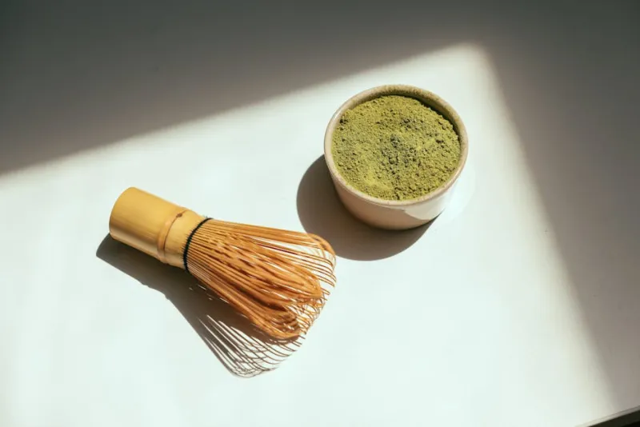
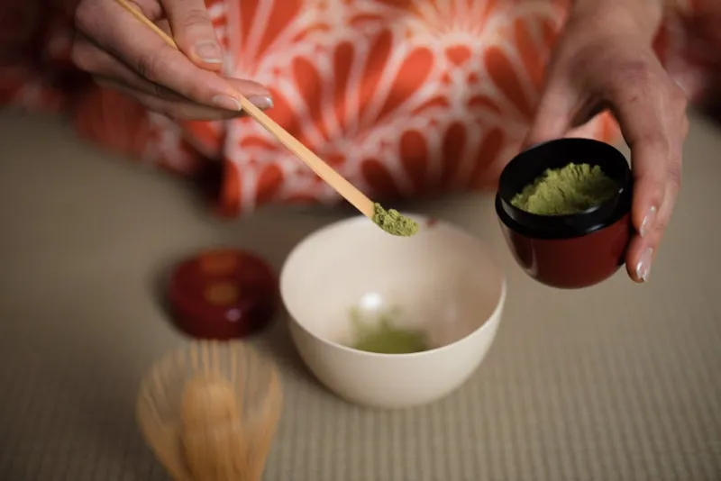

Each ceremony at CHADO is distinct in character and occasion. From the everyday lightness of Usucha to the profound gravity of Koicha, every path leads to the same stillness.
Usucha — thin tea — is the ceremony most guests encounter first. Lighter in texture and more immediately approachable than koicha, it remains entirely ceremonial in its precision and depth. The matcha is whisked to a fine, bright foam; the taste is grassy, slightly bitter, and entirely alive.
The Usucha ceremony at CHADO unfolds over 75 minutes, beginning with seasonal confection and ending in shared silence. Suitable for first-time guests and practiced students alike.
Reserve Usucha
Koicha is thick tea — three times the matcha, one-third the water. The result is a bowl of dense, viscous, intensely flavored tea that host and guests share from a single vessel. This sharing is the ceremony's most profound act of connection. Koicha requires premium-grade ceremonial matcha, sourced exclusively from Uji.
Reserve Koicha
Four times a year, CHADO offers a ceremony built entirely around the season: spring's new growth, summer's fullness, autumn's surrender, winter's quiet. The scroll, the flowers, the confections, the matcha variety, and even the utensils all change. No two seasonal ceremonies are alike.
Join SeasonalA private ceremony is designed entirely around you. Whether marking a milestone, deepening your practice, or hosting an intimate gathering, Sensei Harada will work with you in advance to shape every element — the ceremony style, the utensils, the confections, and the teaching emphasis.
Enquire PrivateThe tea ceremony is one of the oldest known practices for cultivating shared attention, slowing deliberation, and deepening listening within a group. Our corporate program offers a half-day immersion for up to twelve participants, including a facilitated conversation on the principles of chado applied to organizational culture.
Corporate EnquiryAll ceremonial matcha at CHADO is sourced exclusively from a single garden in Uji, south of Kyoto — the ancient heartland of Japanese tea cultivation. The tencha leaves are shade-grown for five weeks before the harvest, stone-milled on-site, and delivered directly to us within forty-eight hours of milling.
For koicha, we use a rare ceremonial grade from the oldest section of the garden — grown without chemical fertilizers since the Meiji period. Its flavour is oceanic and complex, with none of the bitterness found in lesser grades.
Our wagashi confections are prepared in-house and can be adapted for vegan, gluten-free, and nut-free requirements. Please indicate any dietary needs at the time of booking. Matcha itself is naturally vegan and gluten-free.
Not at all. Usucha and our seasonal ceremonies welcome complete beginners. Sensei Harada will guide every movement gently, and no prior knowledge is expected or required. The ceremony works on the body long before it works on the mind.
Comfortable, modest clothing in neutral colours is ideal. Socks are required (we request that shoes be removed at the entrance). Avoid strongly scented perfumes or colognes, as fragrance interferes with the delicate aroma of the matcha and incense.
Yes. We offer beautifully presented gift certificates for any ceremony style, valid for twelve months from date of purchase. Gift certificates can be collected from the studio or mailed to any address. Please contact us to arrange.
We recommend booking at least four weeks in advance. Seasonal ceremonies open for reservation three months ahead and often fill within the first week. Private and corporate ceremonies require a minimum of six weeks' notice to allow for preparation.
We ask that cameras and phones be set aside during the ceremony itself, in keeping with the principle of ichi-go ichi-e — one encounter, fully lived. We are happy to photograph guests with the utensils before and after the ceremony if desired.
Ceremonies are intimate. We limit each gathering to eight guests. Reserve your place and arrive ready to be still.